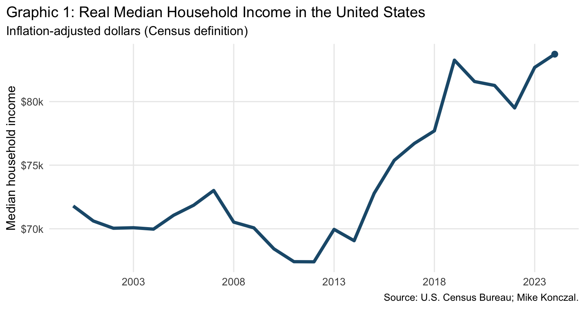
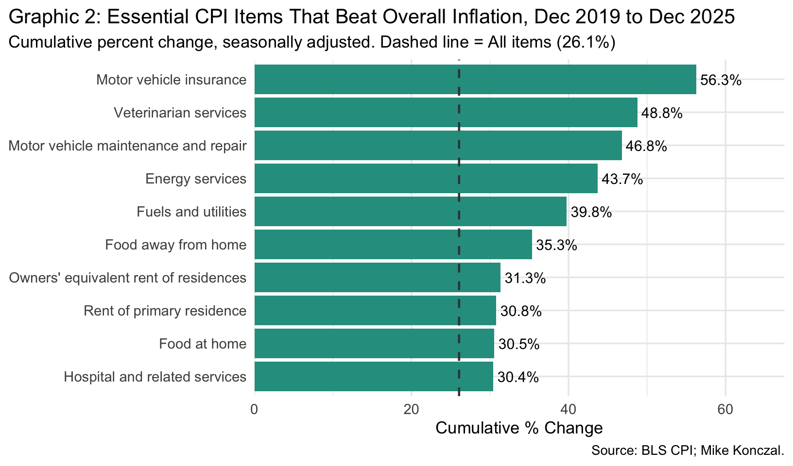

Consumer Spending on Essentials Increased Through 2024
Author
Mike Konczal
Published
February 8, 2026
Introduction
Real Median Household Income
Real median household income provides the broadest sense of how purchasing power has evolved over the long run.
Show code
ggplot(median_income %>%filter(date >=as.Date("2000-01-01")),aes(x = date, y = value)) +geom_line(color ="#1F5A7A", linewidth =1.6) +geom_point(data = median_income %>%slice_tail(n =1),color ="#1F5A7A",size =2.6 ) +scale_x_date(date_breaks ="5 years", date_labels ="%Y") +scale_y_continuous(labels = scales::dollar_format(scale =1/1000, suffix ="k")) +labs(title ="Graphic 1: Real Median Household Income in the United States",subtitle ="Inflation-adjusted dollars (Census definition)",x =NULL,y ="Median household income",caption ="Source: U.S. Census Bureau; Mike Konczal." ) +theme_minimal(base_size =13) +theme(plot.title.position ="plot",panel.grid.minor =element_blank(),axis.text.x =element_text(size =11),axis.text.y =element_text(size =11) )

CPI: Which Essential Items Beat Overall Inflation?
Between December 2019 and December 2025, overall CPI rose approximately 26.1%. But many essential categories exceeded that benchmark substantially.
Show code
curated_items <-c("Motor vehicle insurance", "Motor vehicle maintenance and repair","Veterinarian services", "Energy services","Fuels and utilities","Food away from home", "Food at home", "Owners' equivalent rent of residences","Rent of primary residence", "Hospital and related services")top_essentials <- cpi_changes %>%filter(item_name %in% curated_items, pct_change > all_items_change) %>%arrange(desc(pct_change))ggplot(top_essentials,aes(x = pct_change, y =reorder(item_name, pct_change))) +geom_col(fill ="#2A9D8F") +geom_text(aes(label =paste0(round(pct_change, 1), "%")),hjust =-0.1, size =4) +geom_vline(xintercept = all_items_change, linetype ="dashed",color ="gray25", linewidth =0.8) +scale_x_continuous(expand =expansion(mult =c(0, 0.2))) +labs(title ="Graphic 2: Essential CPI Items That Beat Overall Inflation, Dec 2019 to Dec 2025",subtitle =paste0("Cumulative percent change, seasonally adjusted. Dashed line = All items (",round(all_items_change, 1), "%)" ),x ="Cumulative % Change", y =NULL,caption ="Source: BLS CPI; Mike Konczal.") +theme_minimal(base_size =13) +theme(plot.title.position ="plot",axis.text.y =element_text(size =11),axis.text.x =element_text(size =11) )

Every item on this chart represents something households have little discretion over: shelter, food, transportation, medical care, utilities. Motor vehicle insurance and repair lead the pack, reflecting both higher car prices and supply chain disruptions rippling through the auto ecosystem. Shelter—the largest weight in the CPI basket—ran well above the overall average, as did food both at home and away.
Method
We define core essentials as ‘food at home’ and ‘housing.’ We also check a broader essentials category by adding healthcare and transportation to the core set. Budget shares are computed by summing category expenditures and dividing by total expenditures (“average annual expenditures”) for each group across years.
Findings
Overall (All Consumer Units)
Essentials are modestly higher in 2024 than 2019 for overall consumer units, and the 2023-2024 average sits above 2016-2019.
Income Quintiles
The lowest two income quintiles show the largest increases since 2019, while the highest quintile is flat to slightly down. The overall pattern suggests a rising essentials burden concentrated in lower- and lower-middle-income households. The figures below show both the 2019 vs 2024 comparison and the pre- vs post-pandemic averages.
Essentials Visuals
The charts below show the share of expenditures devoted to core essentials (food at home + housing) and the broader essentials basket (adding healthcare and transportation) side by side. In both cases, the 2023–2024 average exceeds the pre-pandemic baseline, and the increase is concentrated in lower-income quintiles.
Why did essentials budget shares rise? One key reason is that the prices of essentials rose faster than overall prices. Using the BEA’s Personal Consumption Expenditures data, we can construct price indices that match the CEX definitions—a core essentials index (food at home + housing) and a broader essentials index (adding healthcare and transportation)—and compare them to overall PCE prices.
To build these indices we draw on BEA NIPA Tables 2.3.4 and 2.3.5. Table 2.3.4 provides chain-type price indices (2017 = 100) for each PCE expenditure category, while Table 2.3.5 provides the corresponding nominal expenditure levels from which we derive each category’s share of total personal consumption expenditures. For each essentials bundle we renormalize the expenditure-share weights so they sum to one within the bundle, then aggregate monthly inflation using a Törnqvist index: the month-over-month log change in each component’s price index is weighted by the average of the current and prior month’s renormalized expenditure shares, and the resulting weighted log changes are cumulated to form a chained price level. The overall PCE line uses the published aggregate chain-type price index directly. Because the Törnqvist formula closely approximates the Fisher ideal index that BEA uses for its official aggregates, the essentials indices are directly comparable to the overall PCE series.
Both essentials price indices tracked overall PCE closely through 2019. Starting in 2021, a gap emerged—core essentials prices rose faster than overall prices, and the broader essentials index followed. This price divergence is the mechanism behind the rising budget shares: when the things you must buy get more expensive faster than the average, they consume a larger share of your budget even if your income keeps pace with headline inflation.
From December 2013 to November 2019 (six years minus one month, matching the Dec 2019 to Nov 2025 window), Core Essentials rose about 14.3%, Essentials rose about 10.5%, and Overall PCE rose about 7.9%.